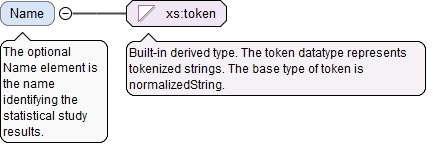
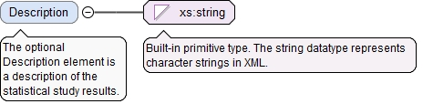

The optional ThisStatisticalStudyResultsInstanceQPId elementuniquely identifies the statistical study results. Differentversions of the results must have differentThisStatisticalStudyResultsInstanceQPId elements.
<xs:element name="ThisStatisticalStudyResultsInstanceQPId" type="QPIdType" minOccurs="0"><xs:annotation><xs:documentation>The optional ThisStatisticalStudyResultsInstanceQPId element uniquely identifies the statistical study results. Different versions of the results must have different ThisStatisticalStudyResultsInstanceQPId elements.</xs:documentation></xs:annotation></xs:element>
<xs:element name="Status" type="StatsEvalStatusType"><xs:annotation><xs:documentation>The Status element is the overall status of the statistical study.</xs:documentation></xs:annotation></xs:element>
The SoftwareId element is the id of the software used toevaluate the statistical values in these results. This valuecan be overridden by the value on any particular instance ofCharacteristicsStats or on any individual statistical value.
The optional xId attribute is a reference to the id of a QIF object in an external document. A QIF object in an external QIF document can be referenced by using references to two QIF ids: the id of the external document reference of type ExternalQIFDocumentReferenceType found in the local document and the id of the object found in the external document.
Source
<xs:element name="SoftwareId" type="QIFReferenceType"><xs:annotation><xs:documentation>The SoftwareId element is the id of the software used to evaluate the statistical values in these results. This value can be overridden by the value on any particular instance of CharacteristicsStats or on any individual statistical value.</xs:documentation></xs:annotation></xs:element>
The StandardId element is the id of the standard orspecification used to evaluate the statistical values inthese results. This value can be overridden by the value onany particular instance of CharacteristicsStats or on anyindividual statistical value.
The optional xId attribute is a reference to the id of a QIF object in an external document. A QIF object in an external QIF document can be referenced by using references to two QIF ids: the id of the external document reference of type ExternalQIFDocumentReferenceType found in the local document and the id of the object found in the external document.
Source
<xs:element name="StandardId" type="QIFReferenceType"><xs:annotation><xs:documentation>The StandardId element is the id of the standard or specification used to evaluate the statistical values in these results. This value can be overridden by the value on any particular instance of CharacteristicsStats or on any individual statistical value.</xs:documentation></xs:annotation></xs:element>
The required n attribute is the number of study issues in the list.
Source
<xs:element name="StudyIssues" type="StudyIssuesType" minOccurs="0"><xs:annotation><xs:documentation>The optional StudyIssues element defines a list that provides details about any issues encountered in the study.</xs:documentation></xs:annotation></xs:element>
<xs:element name="InspectionTraceability" type="InspectionTraceabilityType" minOccurs="0"><xs:annotation><xs:documentation>The optional InspectionTraceability element gives traceability information that applies to the statistical study results.</xs:documentation></xs:annotation></xs:element>
The optional Name element is the name identifying thestatistical study results.
Diagram

Type
xs:token
Properties
content
simple
minOccurs
0
Source
<xs:element name="Name" type="xs:token" minOccurs="0"><xs:annotation><xs:documentation>The optional Name element is the name identifying the statistical study results.</xs:documentation></xs:annotation></xs:element>
The optional Description element is a description of thestatistical study results.
Diagram

Type
xs:string
Properties
content
simple
minOccurs
0
Source
<xs:element name="Description" type="xs:string" minOccurs="0"><xs:annotation><xs:documentation>The optional Description element is a description of the statistical study results.</xs:documentation></xs:annotation></xs:element>
The optional xId attribute is a reference to the id of a QIF object in an external document. A QIF object in an external QIF document can be referenced by using references to two QIF ids: the id of the external document reference of type ExternalQIFDocumentReferenceType found in the local document and the id of the object found in the external document.
Source
<xs:element name="StudyId" type="QIFReferenceType" minOccurs="0"><xs:annotation><xs:documentation>The optional StudyId element is the QIF id of the associated statistical study plan.</xs:documentation></xs:annotation></xs:element>
The required n attribute is the number of Id elements in this array.
Source
<xs:element name="ResultsIds" type="ArrayReferenceType"><xs:annotation><xs:documentation>The ResultsIds element is a list of QIF ids of a measurement results either internal or external to this QIF document.</xs:documentation></xs:annotation></xs:element>
The ResultsQPIds element identifies a list of measurementresults by the results version number QPId in a QIF documentor documents external to this QIF document.
The required n attribute is the number of QPId reference elements in this array.
Source
<xs:element name="ResultsQPIds" type="ArrayQPIdFullReferenceType" maxOccurs="unbounded"><xs:annotation><xs:documentation>The ResultsQPIds element identifies a list of measurement results by the results version number QPId in a QIF document or documents external to this QIF document.</xs:documentation></xs:annotation></xs:element>
The required n attribute is the number of external file references in this list.
Source
<xs:element name="ResultsFiles" type="ExternalFileReferencesType"><xs:annotation><xs:documentation>The ResultsFiles element contains a list of information about external measurement results files.</xs:documentation></xs:annotation></xs:element>
The required n attribute is the number of summaries in the list.
Source
<xs:element name="LinearStatsSummaries" type="SummariesStatisticsLinearType" minOccurs="0"><xs:annotation><xs:documentation>The optional LinearStatsSummary element contains a list of the results of statistical summaries for characteristic statistics with linear units.</xs:documentation></xs:annotation></xs:element>
The required n attribute is the number of summaries in the list.
Source
<xs:element name="AngularStatsSummaries" type="SummariesStatisticsAngularType" minOccurs="0"><xs:annotation><xs:documentation>The optional AngularStatsSummaries element contains a list of the results of statistical summaries for characteristic statistics with angular units.</xs:documentation></xs:annotation></xs:element>
The required n attribute is the number of summaries in the list.
Source
<xs:element name="AreaStatsSummaries" type="SummariesStatisticsAreaType" minOccurs="0"><xs:annotation><xs:documentation>The optional AreaStatsSummaries element contains a list of the results of statistical summaries for characteristic statistics with area units.</xs:documentation></xs:annotation></xs:element>
The required n attribute is the number of summaries in the list.
Source
<xs:element name="ForceStatsSummaries" type="SummariesStatisticsForceType" minOccurs="0"><xs:annotation><xs:documentation>The optional ForceStatsSummaries element contains a list of the results of statistical summaries for characteristic statistics with force units.</xs:documentation></xs:annotation></xs:element>
The required n attribute is the number of summaries in the list.
Source
<xs:element name="MassStatsSummaries" type="SummariesStatisticsMassType" minOccurs="0"><xs:annotation><xs:documentation>The optional MassStatsSummaries element contains a list of the results of statistical summaries for characteristic statistics with mass units.</xs:documentation></xs:annotation></xs:element>
The required n attribute is the number of summaries in the list.
Source
<xs:element name="PressureStatsSummaries" type="SummariesStatisticsPressureType" minOccurs="0"><xs:annotation><xs:documentation>The optional PressureStatsSummaries element contains a list of the results of statistical summaries for characteristic statistics with pressure units.</xs:documentation></xs:annotation></xs:element>
The required n attribute is the number of summaries in the list.
Source
<xs:element name="SpeedStatsSummaries" type="SummariesStatisticsSpeedType" minOccurs="0"><xs:annotation><xs:documentation>The optional SpeedStatsSummaries element contains a list of the results of statistical summaries for characteristic statistics with speed units.</xs:documentation></xs:annotation></xs:element>
The optional TemperatureStatsSummaries element contains a listof the results of statistical summaries for characteristicstatistics with temperature units.
The required n attribute is the number of summaries in the list.
Source
<xs:element name="TemperatureStatsSummaries" type="SummariesStatisticsTemperatureType" minOccurs="0"><xs:annotation><xs:documentation>The optional TemperatureStatsSummaries element contains a list of the results of statistical summaries for characteristic statistics with temperature units.</xs:documentation></xs:annotation></xs:element>
The required n attribute is the number of summaries in the list.
Source
<xs:element name="TimeStatsSummaries" type="SummariesStatisticsTimeType" minOccurs="0"><xs:annotation><xs:documentation>The optional TimeStatsSummaries element contains a list of the results of statistical summaries for characteristic statistics with time units.</xs:documentation></xs:annotation></xs:element>
The optional UserDefinedUnitStatsSummaries element contains alist of the results of statistical summaries for characteristicstatistics with user defined units. This element is not to beused to define summaries with units available in anotherelement. In particular this element is not to be used to definesummaries with linear units, angular units, or units oftemperature, area, force, mass, pressure, speed, or time.
The required n attribute is the number of summaries in the list.
Source
<xs:element name="UserDefinedUnitStatsSummaries" type="SummariesStatisticsUserDefinedUnitType" minOccurs="0"><xs:annotation><xs:documentation>The optional UserDefinedUnitStatsSummaries element contains a list of the results of statistical summaries for characteristic statistics with user defined units. This element is not to be used to define summaries with units available in another element. In particular this element is not to be used to define summaries with linear units, angular units, or units of temperature, area, force, mass, pressure, speed, or time.</xs:documentation></xs:annotation></xs:element>
The required n attribute is the number of summaries in the list.
Source
<xs:element name="StatsSummaries" type="SummariesStatisticsType" minOccurs="0"><xs:annotation><xs:documentation>The optional StatsSummaries element contains a list of the results of statistical summaries for characteristic statistics with dimensionless units.</xs:documentation></xs:annotation></xs:element>
The required id attribute is the QIF id of the statistical studyresults, used for referencing.
Source
<xs:complexType name="StatisticalStudyResultsBaseType" abstract="true"><xs:annotation><xs:documentation>The StatisticalStudyResultsBaseType is the abstract base type that defines information common to all statistical study results.</xs:documentation></xs:annotation><xs:sequence><xs:element name="ThisStatisticalStudyResultsInstanceQPId" type="QPIdType" minOccurs="0"><xs:annotation><xs:documentation>The optional ThisStatisticalStudyResultsInstanceQPId element uniquely identifies the statistical study results. Different versions of the results must have different ThisStatisticalStudyResultsInstanceQPId elements.</xs:documentation></xs:annotation></xs:element><xs:element ref="Attributes" minOccurs="0"><xs:annotation><xs:documentation>The optional Attributes element contains user defined attributes (typified, binary array, or XML structured).</xs:documentation></xs:annotation></xs:element><xs:element name="Status" type="StatsEvalStatusType"><xs:annotation><xs:documentation>The Status element is the overall status of the statistical study.</xs:documentation></xs:annotation></xs:element><xs:choice minOccurs="0"><xs:element name="SoftwareId" type="QIFReferenceType"><xs:annotation><xs:documentation>The SoftwareId element is the id of the software used to evaluate the statistical values in these results. This value can be overridden by the value on any particular instance of CharacteristicsStats or on any individual statistical value.</xs:documentation></xs:annotation></xs:element><xs:element name="StandardId" type="QIFReferenceType"><xs:annotation><xs:documentation>The StandardId element is the id of the standard or specification used to evaluate the statistical values in these results. This value can be overridden by the value on any particular instance of CharacteristicsStats or on any individual statistical value.</xs:documentation></xs:annotation></xs:element></xs:choice><xs:element name="StudyIssues" type="StudyIssuesType" minOccurs="0"><xs:annotation><xs:documentation>The optional StudyIssues element defines a list that provides details about any issues encountered in the study.</xs:documentation></xs:annotation></xs:element><xs:element name="InspectionTraceability" type="InspectionTraceabilityType" minOccurs="0"><xs:annotation><xs:documentation>The optional InspectionTraceability element gives traceability information that applies to the statistical study results.</xs:documentation></xs:annotation></xs:element><xs:element name="Name" type="xs:token" minOccurs="0"><xs:annotation><xs:documentation>The optional Name element is the name identifying the statistical study results.</xs:documentation></xs:annotation></xs:element><xs:element name="Description" type="xs:string" minOccurs="0"><xs:annotation><xs:documentation>The optional Description element is a description of the statistical study results.</xs:documentation></xs:annotation></xs:element><xs:element name="StudyId" type="QIFReferenceType" minOccurs="0"><xs:annotation><xs:documentation>The optional StudyId element is the QIF id of the associated statistical study plan.</xs:documentation></xs:annotation></xs:element><xs:choice minOccurs="0"><xs:annotation><xs:documentation>This optional compositor provides a choice between QIF sources of measurement results (either internal or external) or other, external sources of measurement results.</xs:documentation></xs:annotation><xs:element name="ResultsIds" type="ArrayReferenceType"><xs:annotation><xs:documentation>The ResultsIds element is a list of QIF ids of a measurement results either internal or external to this QIF document.</xs:documentation></xs:annotation></xs:element><xs:element name="ResultsQPIds" type="ArrayQPIdFullReferenceType" maxOccurs="unbounded"><xs:annotation><xs:documentation>The ResultsQPIds element identifies a list of measurement results by the results version number QPId in a QIF document or documents external to this QIF document.</xs:documentation></xs:annotation></xs:element><xs:element name="ResultsFiles" type="ExternalFileReferencesType"><xs:annotation><xs:documentation>The ResultsFiles element contains a list of information about external measurement results files.</xs:documentation></xs:annotation></xs:element></xs:choice><xs:element ref="AverageFeatures" minOccurs="0"><xs:annotation><xs:documentation>The optional AverageFeatures element is a list of the results of average feature calculations.</xs:documentation></xs:annotation></xs:element><xs:element ref="CharacteristicsStats" minOccurs="0"><xs:annotation><xs:documentation>The optional CharacteristicsStats element contains a list of results of statistical analysis for one or more characteristics.</xs:documentation></xs:annotation></xs:element><xs:element name="LinearStatsSummaries" type="SummariesStatisticsLinearType" minOccurs="0"><xs:annotation><xs:documentation>The optional LinearStatsSummary element contains a list of the results of statistical summaries for characteristic statistics with linear units.</xs:documentation></xs:annotation></xs:element><xs:element name="AngularStatsSummaries" type="SummariesStatisticsAngularType" minOccurs="0"><xs:annotation><xs:documentation>The optional AngularStatsSummaries element contains a list of the results of statistical summaries for characteristic statistics with angular units.</xs:documentation></xs:annotation></xs:element><xs:element name="AreaStatsSummaries" type="SummariesStatisticsAreaType" minOccurs="0"><xs:annotation><xs:documentation>The optional AreaStatsSummaries element contains a list of the results of statistical summaries for characteristic statistics with area units.</xs:documentation></xs:annotation></xs:element><xs:element name="ForceStatsSummaries" type="SummariesStatisticsForceType" minOccurs="0"><xs:annotation><xs:documentation>The optional ForceStatsSummaries element contains a list of the results of statistical summaries for characteristic statistics with force units.</xs:documentation></xs:annotation></xs:element><xs:element name="MassStatsSummaries" type="SummariesStatisticsMassType" minOccurs="0"><xs:annotation><xs:documentation>The optional MassStatsSummaries element contains a list of the results of statistical summaries for characteristic statistics with mass units.</xs:documentation></xs:annotation></xs:element><xs:element name="PressureStatsSummaries" type="SummariesStatisticsPressureType" minOccurs="0"><xs:annotation><xs:documentation>The optional PressureStatsSummaries element contains a list of the results of statistical summaries for characteristic statistics with pressure units.</xs:documentation></xs:annotation></xs:element><xs:element name="SpeedStatsSummaries" type="SummariesStatisticsSpeedType" minOccurs="0"><xs:annotation><xs:documentation>The optional SpeedStatsSummaries element contains a list of the results of statistical summaries for characteristic statistics with speed units.</xs:documentation></xs:annotation></xs:element><xs:element name="TemperatureStatsSummaries" type="SummariesStatisticsTemperatureType" minOccurs="0"><xs:annotation><xs:documentation>The optional TemperatureStatsSummaries element contains a list of the results of statistical summaries for characteristic statistics with temperature units.</xs:documentation></xs:annotation></xs:element><xs:element name="TimeStatsSummaries" type="SummariesStatisticsTimeType" minOccurs="0"><xs:annotation><xs:documentation>The optional TimeStatsSummaries element contains a list of the results of statistical summaries for characteristic statistics with time units.</xs:documentation></xs:annotation></xs:element><xs:element name="UserDefinedUnitStatsSummaries" type="SummariesStatisticsUserDefinedUnitType" minOccurs="0"><xs:annotation><xs:documentation>The optional UserDefinedUnitStatsSummaries element contains a list of the results of statistical summaries for characteristic statistics with user defined units. This element is not to be used to define summaries with units available in another element. In particular this element is not to be used to define summaries with linear units, angular units, or units of temperature, area, force, mass, pressure, speed, or time.</xs:documentation></xs:annotation></xs:element><xs:element name="StatsSummaries" type="SummariesStatisticsType" minOccurs="0"><xs:annotation><xs:documentation>The optional StatsSummaries element contains a list of the results of statistical summaries for characteristic statistics with dimensionless units.</xs:documentation></xs:annotation></xs:element></xs:sequence><xs:attribute name="id" type="QIFIdType" use="required"><xs:annotation><xs:documentation>The required id attribute is the QIF id of the statistical study results, used for referencing.</xs:documentation></xs:annotation></xs:attribute></xs:complexType>
<xs:attribute name="id" type="QIFIdType" use="required"><xs:annotation><xs:documentation>The required id attribute is the QIF id of the statistical study results, used for referencing.</xs:documentation></xs:annotation></xs:attribute>